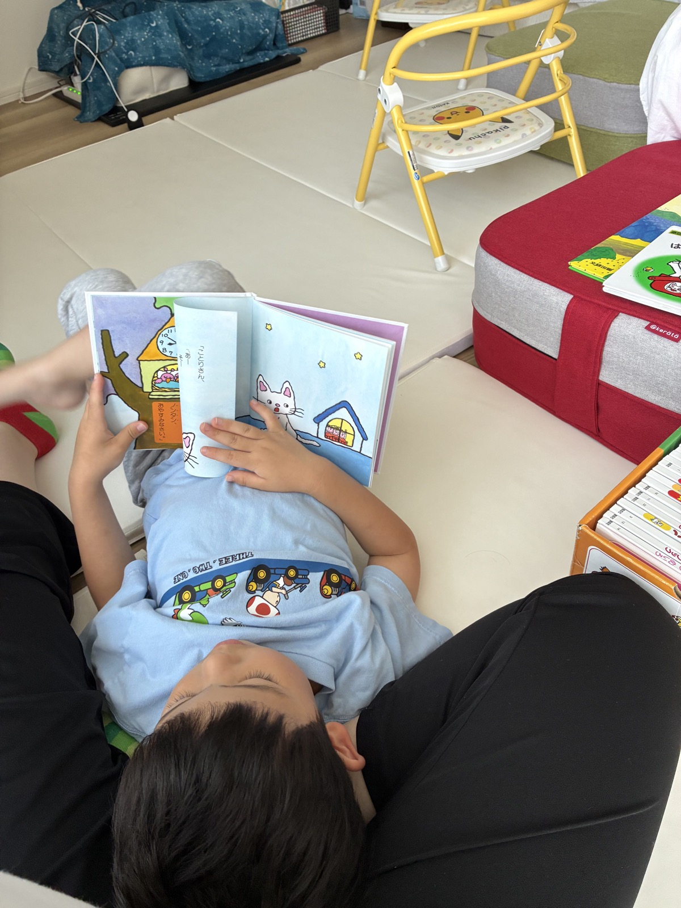
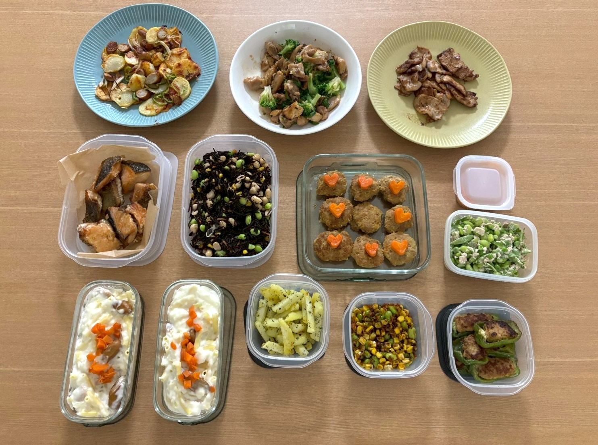

nicottoだよりに、福岡のベビーシッター・料理代行のお役立ち記事を追加しました。
お知らせ・お役立ち情報
nicottoだより
福岡市周辺でベビーシッターや料理代行を検討している方へ。初めての利用前に知っておきたいこと、日々の活動レポート、お知らせをやさしくお届けします。
News
お知らせ
福岡市周辺でのベビーシッター・送迎サポートのご相談を受け付けています。
料理代行では作り置き・下味冷凍・離乳食・幼児食づくりもご相談いただけます。
Category Topics
カテゴリ別の新着記事
ベビーシッター、料理代行、活動レポートに分けて、読みたい記事へたどり着きやすく整理しています。
ベビーシッター
ベビーシッターの新着記事
初めてのご利用前に知っておきたいことや、見守り・送迎の相談ポイントをまとめます。
料理代行
料理代行の新着記事
作り置き、下味冷凍、離乳食・幼児食など、毎日の食事づくりに役立つ情報をお届けします。
活動レポート
活動レポートの新着記事
実際のサポートの雰囲気や、料理代行のメニュー例などを少しずつ紹介していきます。

活動レポートReport
ベビーシッターの活動レポートを準備中です
見守りや事前面談の雰囲気が伝わるようなレポートを掲載していきます。
…
活動レポートReport
料理代行メニュー例を準備中です
作り置きや下味冷凍など、ご家庭に合わせた食事づくりの例を掲載していきます。
…Category
カテゴリから探す
気になるテーマから、新着記事のまとまりへ移動できます。